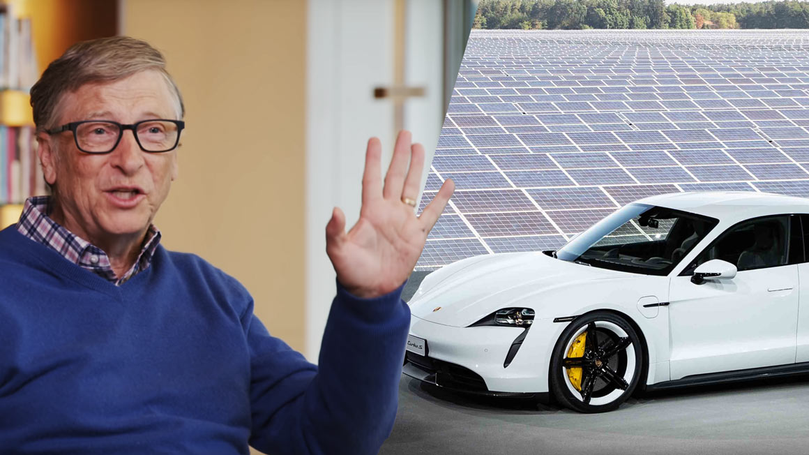

Bill Gates

One of the richest man in the world
One of the richest man in the world
Success is a lousy teacher. It seduces smart people into thinking they can't lose.
Your most unhappy customers are your greatest source of learning.
It's fine to celebrate success but it is more important to heed the lessons of failure.
Life is not fair; get used to it.
As we look ahead into the next century, leaders will be those who empower others.
If you can't make it good, at least make it look good.
The Internet is becoming the town square for the global village of tomorrow.
Often you have to rely on intuition.
Intellectual property has the shelf life of a banana.
Until we're educating every kid in a fantastic way, until every inner city is cleaned up, there is no shortage of things to do.